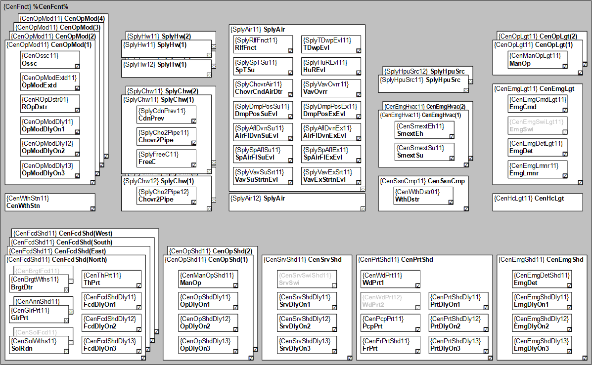
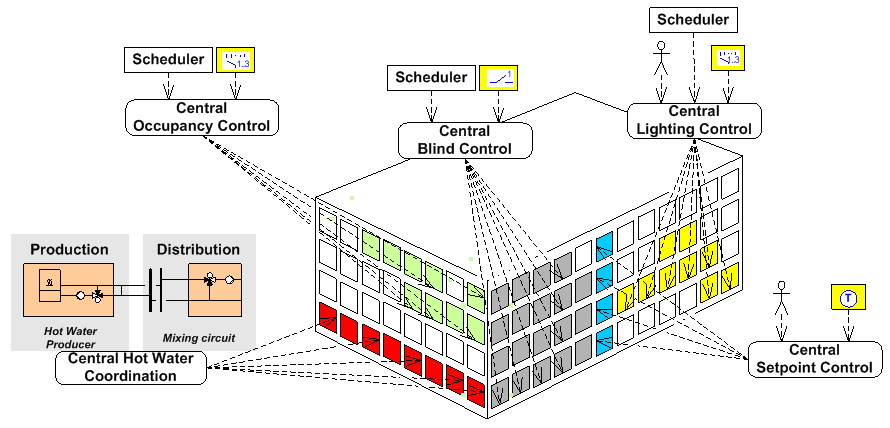

中央职能
Overview
应用程序类型“中央功能 11”(CenFnct11) 是叠加房间自动化功能的最佳软件解决方案。
该类型包括常用的 AFs 来集中操作电气和机械装置 HVAC、照明和遮阳。

某些 AFs 可能有多个实例，例如中央立面的功能为 4 个基点。
功能 | HVAC | 灯光 | 阴影 | 常见的 | 供应 |
|---|---|---|---|---|---|
紧急情况 | 2 | 1 | 1* |
|
|
服务 |
|
| 1* |
|
|
保护 |
|
| 1* |
|
|
手动操作 |
| 2 | 2* |
|
|
正面 |
|
| 4* |
|
|
季节性补偿 | 1 |
|
|
|
|
控制方式 |
|
|
| 4* |
|
气象站 |
|
|
| 1 |
|
空气 |
|
|
|
| 1 |
冷水 |
|
|
|
| 2 |
热水 |
|
|
|
| 2 |
* 这些 AFs 有阶段性延迟。特别是对于遮蔽执行器，同时启动/operating的组成员数量不能太大，否则可能会使电网过载。
Distribution of information
来自以下功能的信息通过分组分发到相连的房间。
- Central weather information
- Central operation
- Central service functions
- Central protection and emergency functions
- Functions for HVAC supply chains
分布可以分层组织。
Hierarchical grouping
Collect and distribute information in supply chains
来自相连房间的信息通过分组收集或分发：
- Demand messages for supply chains (chilled water, hot water, air)
- State messages from supply chains
收集和分发可以分层组织（捆绑）。
Bundling supply AFs
Group categories
可以使用以下组类别：
- Occupancy
- Lighting
- Shading
- HVAC
- Facade
- Weather station
- Supply
可以在管理站上过滤它们。
Sub-categories
根据功能，通信具有高优先级，以防止不必要的本地操作。
Priorities
功能 | 优先事项 |
|---|---|
紧急功能 | Emg= 紧急情况，例如火灾或疏散，灯打开，百叶窗打开。 |
服务功能 | Srv= 服务，例如，将百叶窗移动到指定位置以清洁窗户。 |
保护功能 | Prt= 例如，在室外温度较低或太阳辐射较高时关闭百叶窗的保护。 |
手术 | Op= 由调度程序进行操作，操作员通过 BACnet 客户端或本地操作员单元进行干预。 |

中央命令可以来自以下来源：
- External system or third-party device
- System user via BACnet client
- Building user via BACnet client or local operating element
- Scheduler or reaction program
- Superposed location based on grouping function.
Supply chains primary plants and room
来自不同消费者的需求和强制信号可以被收集、评估并通过分组转发到以下组件：
- SplyAir: To the primary air handling units
- SplyHw: To heating circuits
- SplyChw: To cooling circuits
转到下一页
供应变化还用于保护植物、骨料或组件（例如，空气处理装置不得迫使空气吹向关闭的风门或 VAV 箱）。